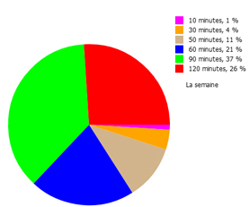
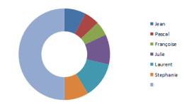

Nous allons aborder une partie difficile, mais indispensable : les layouts. La "magie" de D3 vient, en grande partie, des layouts qu'elle propose. Les layouts vont permettre d'adapter automatiquement n'importe quel jeu de données à une représentation graphique particulière.
Prenons tout de suite un exemple avec un diagramme circulaire dit diagramme camembert.
Imaginons un tableau de données : tab=[15,30,35,70], notre objectif est d'afficher un diagramme camembert à partir de ces données.
Sans D3, les données ne seraient pas directement exploitables, en effet, pour tracer les différentes portions de notre diagramme, il faudrait transformer chaque donnée en pourcentage, puis transformer ces pourcentages en angle...bref, pas très simple.
C'est ici qu'intervient un des layouts proposés par D3, le layout "pie" qui va transformer automatiquement chaque donnée du tableau en angle directement exploitable pour tracer notre diagramme (en fait, c'est un peu plus compliqué que cela, puisque chaque donnée sera transformée en "chemin" (<path> svg)).
script.js
var tab=[15,30,35,70];
var couleurs=["green","yellow","purple","blue"];
var body=d3.select("body");
var svg=body.append("svg");
svg.attr({"width":"400px","height":"400px"})
svg.style("border","1px solid black");
var pieTab=d3.layout.pie();
pieTab.value(function(d){
return d;
});
var arc=d3.svg.arc();
arc.outerRadius(180);
var grp=svg.append("g").attr("transform","translate(200,200)");
var graph=grp.selectAll("path").data(pieTab(tab))
graph.enter()
.append("path")
.attr("fill",function(d,i){
return(couleurs[i]);
})
.attr("d",arc);
Testez ce code.
Prenons quelques minutes afin d'étudier ce code :
var pieTab=d3.layout.pie();
pieTab.value(function(d){
return d;
});
Nous commençons par définir une fonction pieTab qui utilise le layout pie. Cette fonction va permettre de transformer nos données brutes en données utilisables pour créer notre diagramme.
var arc=d3.svg.arc();
arc.outerRadius(180);
Nous utilisons ensuite la méthode proposée par D3 : arc(). Nous créons un objet arc, puis nous appliquons la méthode outerRadius qui permet de définir le rayon de notre diagramme.
var grp=svg.append("g").attr("transform","translate(200,200)");
Notre diagramme doit se trouver dans un "groupe svg", nous définissons donc ce groupe avec la variable grp. Pour que le centre de notre diagramme se trouve au centre de notre fenêtre, nous appliquons une translation sur notre groupe.
var graph=grp.selectAll("path").data(pieTab(tab))
graph.enter()
.append("path")
.attr("fill",function(d,i){
return(couleurs[i]);
})
.attr("d",arc);
Le "remplissage" de notre diagramme doit se faire par l'intermédiaire d'un "chemin" (balise <path> du svg) : un chemin pour chaque portion du camembert. Nous associons nos données à ces "chemins". Attention, nous n'utilisons par directement les données du tableau (qui seraient inexploitables), mais les résultats renvoyés par la fonction pieTab définie plus haut.
Chaque chemin (chaque portion du camenbert), se voit attribuer une couleur (on utilise le tableau couleurs défini plus haut). Rappelons que i correspond à l'indice de position dans le tableau tab : le premier élément du tableau tab sera associé à la première couleur du tableau couleurs (15=vert)...
Pour terminer .attr("d",arc) permet d'associer le chemin courant et l'arc de cercle défini plus haut.
Tout cela est un peu complexe, n'hésitez pas à poser des questions
En repartant du code vu dans le "À faire vous même 10.1", ajoutez une valeur au tableau tab. Attention, il vous faudra faire une autre modification, laquelle ?
Il est possible de produire un diagramme en "anneau" à la place du camembert.
Pour cela, il suffit d'appliquer la méthode innerRadius à l'objet arc. Cette méthode prend un paramètre : le rayon interne de notre anneau.
En repartant du code vu dans le "À faire vous même 10.1", modifiez le code afin d'obtenir un diagramme en anneau à la place du diagramme en camembert.